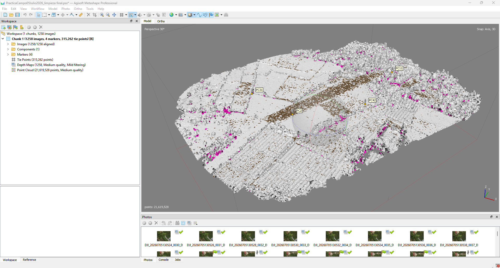
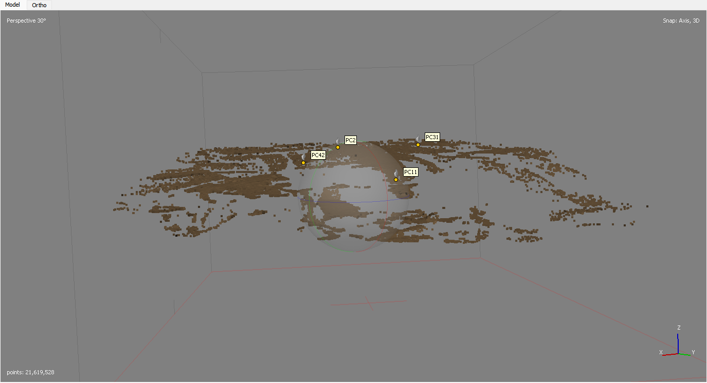

Qué se realizó en esta etapa
La nube densa fue clasificada geométricamente para separar los puntos que representan el terreno de la vegetación, edificaciones y otros objetos elevados. Se aplicaron los parámetros Max Angle 20°, Max Distance 0.15 m, Cell Size 10 m y Erosion Radius 0.5 m, y el resultado fue revisado en planta y perfil antes de aceptar la clase Ground.

Parámetros y significado práctico.

Resultado general por clases.

Vista lateral de la clase Ground.